Live Prototype
The prototype requires camera access and runs COCO-SSD + a custom-trained classifier entirely in the browser. Best experienced on a laptop with a webcam and a few household objects nearby.
Concept
Self Stock is a browser-based smart inventory system that uses machine learning to recognise, classify, and count physical products in real time using just a webcam. The user trains the system on their own products through a guided onboarding flow — no pre-existing dataset, no server, no manual entry. The interface then updates stock counts automatically as products enter and leave the camera's field of view.
The core question driving the project: can a lightweight, entirely client-side ML pipeline produce a reliable-enough signal to support a real inventory management workflow? The answer, as the prototype demonstrates, is "sometimes, under controlled conditions" — and the gap between that and "reliably, at scale" is where the most interesting design and engineering problems live.
Technical Architecture
The system uses a three-layer sequential pipeline, running entirely client-side on TensorFlow.js 3.x. Each layer addresses a distinct question, and each has its own failure modes:
Layer 1 — Detection (COCO-SSD)
@tensorflow-models/coco-ssd@2.2.3 runs on the full camera frame every
few render cycles using the lite_mobilenet_v2 base. It returns bounding
boxes around detected objects. This handles the "how many things and where?"
question. COCO-SSD only recognises its 80 built-in categories (bottle, cup, book,
phone, remote, etc.), so demo products must visually resemble one of those categories.
If COCO-SSD doesn't fire, the rest of the pipeline doesn't run — this is the most
fragile layer.
Layer 2 — Classification (Teachable Machine)
For each bounding box returned by COCO-SSD, the region is cropped and resized to
224 × 224, then classified by a user-trained model built with Google's
@teachablemachine/image@0.8.5 library. This handles the
"which product is this?" question. The classifier is trained in-browser during
onboarding using transfer learning on MobileNet v2 (α = 0.35). Training samples
are buffered locally as ImageData objects and fed to the model in a single
batch at training time — a design choice driven by a critical bug discovered during
development (more on that in the iteration story below).
Layer 3 — Tracking (Custom Centroid Tracker)
Once an object is confidently classified, it's assigned a persistent tracking ID via a centroid-matching algorithm. The tracker compares each frame's centroids against previous centroids to determine: same object (distance below threshold), new object (no nearby previous centroid → stock increments), or exited object (no match for ~15 frames → stock decrements).
Known limitation: objects that touch or overlap may merge into a single COCO-SSD detection. The demo requires spacing objects apart.
Plan A / B / C
Plan A — Full Pipeline (Implemented)
In-browser Teachable Machine training + COCO-SSD detection + per-crop classification + centroid tracking with persistent IDs. This is the version the prototype implements.
Plan B — Simplified Counting
Drop the centroid tracker; use debounce logic instead. An object must fully leave the frame before it can be counted again. Sequential scan rather than simultaneous multi-object tracking. This removes the most complex custom code and still demonstrates detection + classification.
Plan C — Manual Trigger
Drop COCO-SSD entirely. The Teachable Machine classifier runs on the whole frame. A manual button press triggers a stock event. No automatic counting — the user explicitly tells the system "I'm adding/removing this product." This is the guaranteed fallback: if nothing else works, a trained classifier + a button always will.
Process & Iteration
The most important part of this project wasn't the final working state — it was the sequence of failures that shaped the architecture. What follows is a chronological account of the development process, documented through screenshots taken during the session.
Phase 1: Initial Implementation with ml5.js
The first version of the pipeline used ml5.js as a high-level wrapper
around both COCO-SSD (for detection) and MobileNet's feature extractor (for
classification). The onboarding flow worked: users could name a product, capture
training samples, and train a classifier. Single-product recognition came online
quickly.
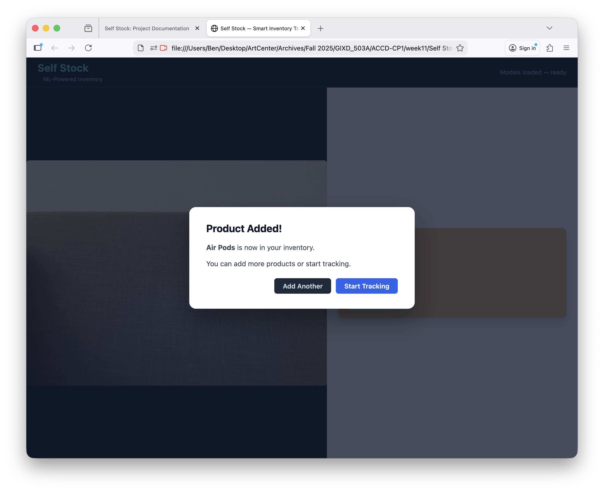
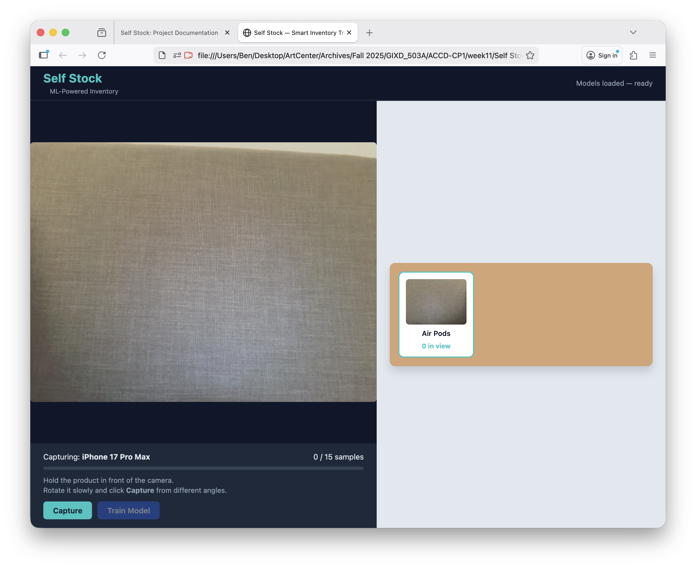
Phase 2: The Misidentification Problem
With two products trained, the system immediately revealed a critical limitation. Both the AirPods box and the iPhone box were being classified as "Air Pods" at 100% confidence. The ml5 feature extractor wasn't learning meaningful visual distinctions between the two similar white product boxes. Even worse, an empty hand held up to the camera was classified as "Air Pods" at 97% confidence — the model had learned "anything vaguely hand-shaped or white-boxish in front of the camera" rather than the actual product features.
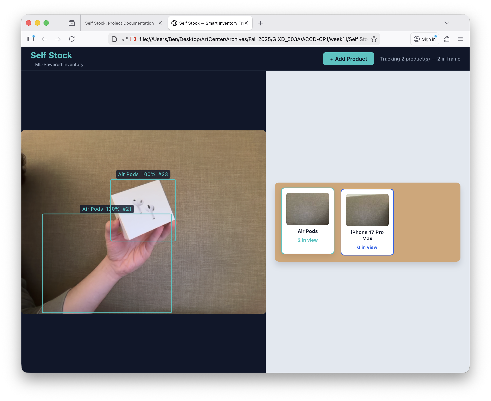
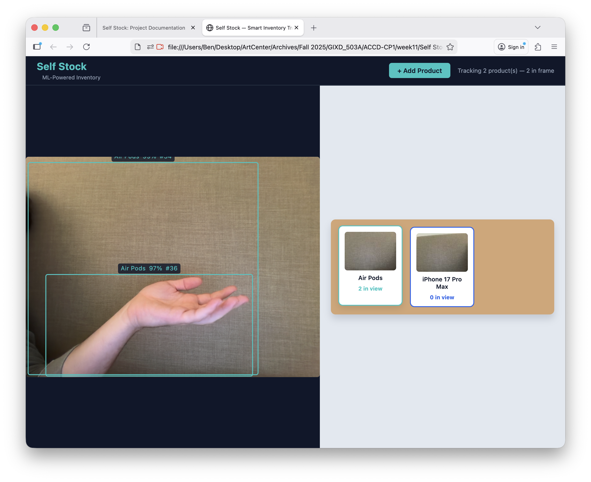
These weren't edge cases — they were fundamental. The classifier had no meaningful background class to compare against, and ml5's feature extractor wasn't producing embeddings distinct enough to separate visually similar products. This motivated a complete replacement of the classification layer.
Phase 3: Single Product Success, Multi-Product Failure
Interestingly, single-product tracking worked well. With only AirPods trained, the system reliably detected and labeled the product at 100% confidence with persistent tracker IDs. The three-layer pipeline concept was sound — the problem was specifically in the classification model's ability to distinguish between multiple products.
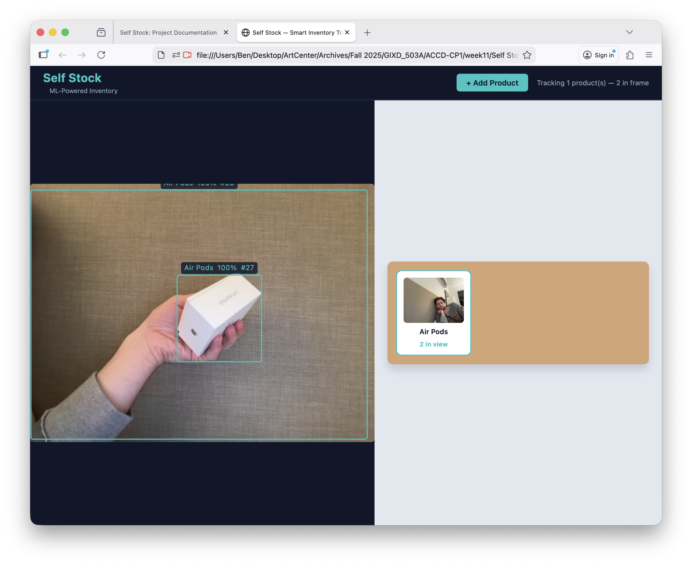
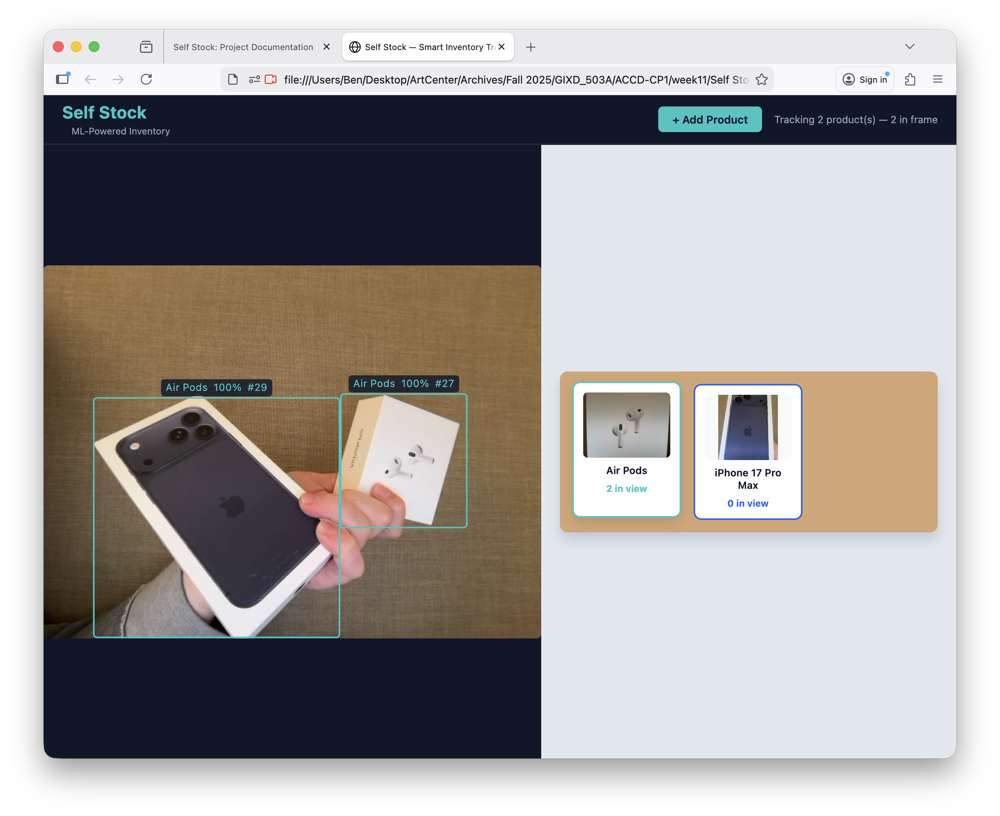
Phase 4: Switching to Teachable Machine
The fix required replacing ml5's feature extractor with Google's Teachable Machine
library (@teachablemachine/image), which provides a more robust
transfer-learning pipeline. This also meant replacing ml5's COCO-SSD wrapper with
the native @tensorflow-models/coco-ssd package to avoid TensorFlow.js
version conflicts (ml5 bundled TF.js 1.x, but Teachable Machine requires TF.js 3.x).
The migration immediately broke the sample capture pipeline. The recording button
showed "Recording..." but zero samples were being captured. The root cause: the
TF.js version conflict between ml5 (v1) and the new libraries (v3) meant the global
tf object was being overwritten, causing silent failures in the detection
layer.
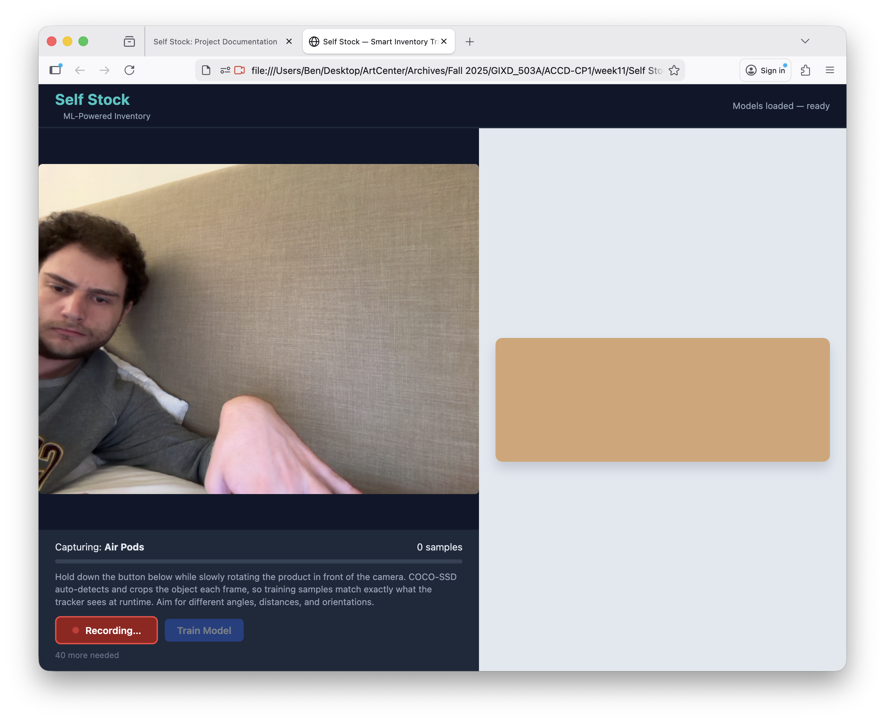
Phase 5: The Cascade of Training Errors
After resolving the version conflict by removing ml5 entirely, a cascade of training errors followed. Each fix revealed the next layer of incompatibility between the old ml5-based code and the new Teachable Machine API.
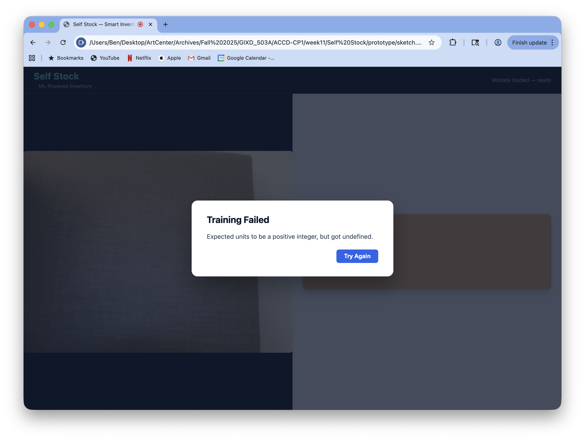
denseUnits parameter in the Teachable Machine training config.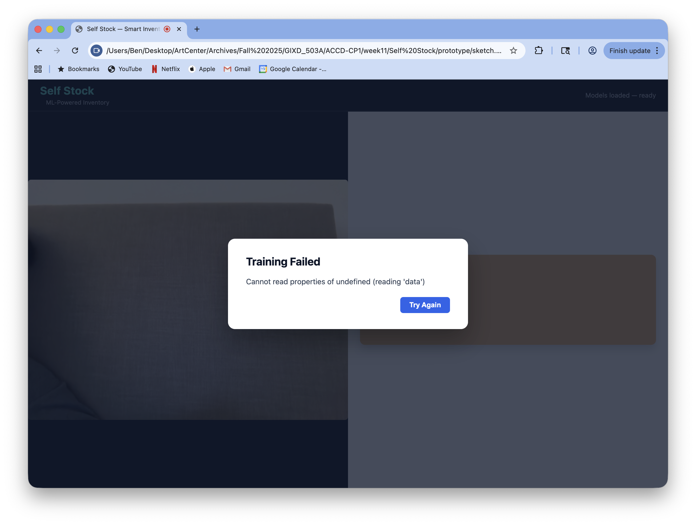
setLabel() (singular) instead of setLabels() (plural) — the dataset arrays weren't being initialized.
These errors were fixed one at a time: adding the denseUnits: 100 parameter,
switching from setLabel(index, name) to setLabels(array),
and adjusting the training callback format. Each fix was small, but finding the right
API surface required careful reading of the Teachable Machine source code — the
documentation is sparse.
Phase 6: Training Succeeds, but Tracking Shows Zero
The training pipeline finally completed without errors, but live tracking showed "0 in view" for all products. A diagnostic status bar was added to the UI to expose the pipeline's internal state, which revealed two problems layered on top of each other.
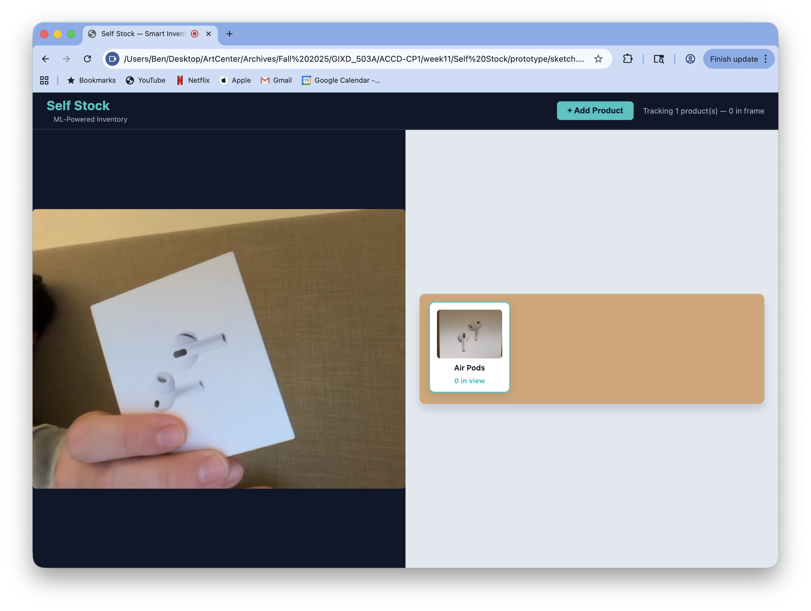
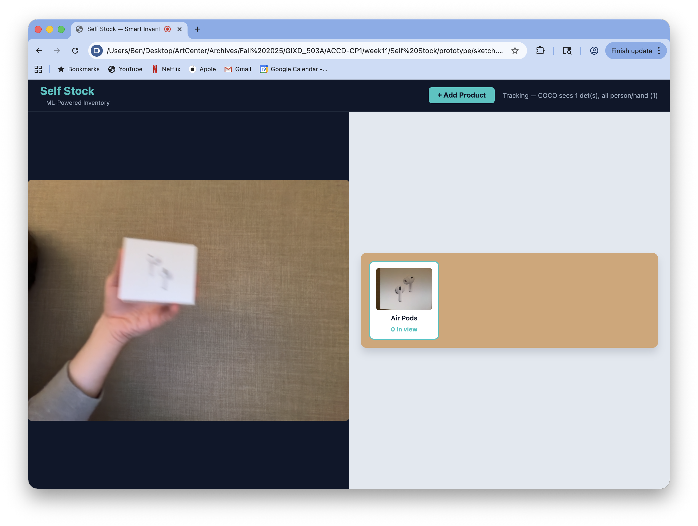
The first problem was a person-class filter that was discarding any COCO-SSD detection labeled "person." Since the user was holding the product in their hand, COCO-SSD often returned a single bounding box encompassing both the hand and the product, labeled "person." The filter discarded it, and the rest of the pipeline never ran.
The second, deeper problem was in the Teachable Machine API itself. The
setLabels() method reinitialises the model's internal dataset arrays. The
original code called setLabels() once for the product class during capture,
then again when adding the background class before training. The second call wiped all
previously stored product training data. The model was being trained on 0 product samples
and 15 background samples — so everything was classified as background, producing
"0 in view."
This was the critical architectural insight that shaped the final design: training
samples must be buffered locally (as raw ImageData
objects) and only fed to the Teachable Machine model in a single batch at training
time, after a single setLabels() call. This buffered-samples architecture
became the backbone of the final classification layer.
Phase 7: Resolution
With the buffered-samples architecture in place, the person filter removed, and COCO-aware confidence gating added (higher threshold for "person" detections to reduce hand false positives, lower threshold for objects), the system finally differentiated both products reliably.
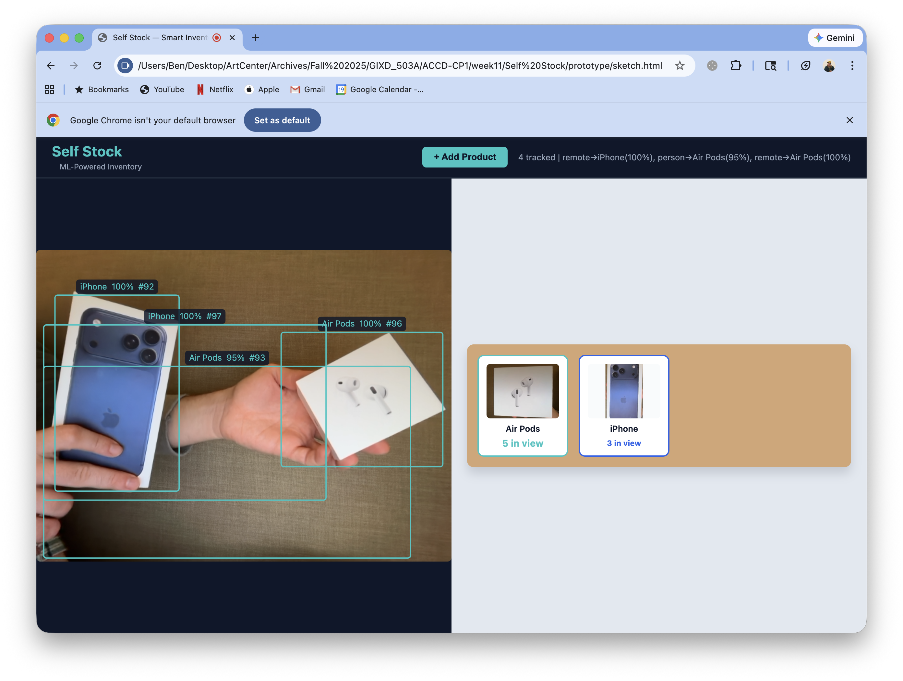
One additional fix was required along the way: adding a second product class caused
a tensor shape mismatch ([16,2] vs [16,3]) because the old model's dense
layer was sized for 2 classes. The solution was to create a fresh Teachable Machine
model at the start of each training run, ensuring the output layer always matches the
current number of classes.
What Didn't Work & Known Limitations
COCO-SSD Vocabulary as a Gatekeeper
The biggest constraint is that COCO-SSD acts as a hard gate: if it doesn't detect an object, the rest of the pipeline never sees it. Many real products (cereal boxes, cans, bags) don't closely resemble any of COCO-SSD's 80 categories. This means the demo is essentially limited to products that look like something in COCO-SSD's vocabulary — the Apple product boxes work because they're detected as "cell phone," "remote," or similar.
Stock Counter Accuracy
The centroid tracker overcounts when COCO-SSD produces multiple overlapping bounding boxes for the same object (common with hands holding products), and undercounts when objects move too quickly for the tracker's distance threshold. The grace period before an exit event (15 frames) means removed objects linger in the count briefly. This is the most visible remaining limitation — the system can tell you what is in frame accurately, but how many remains unreliable.
Dual-Model Latency
Running COCO-SSD and Teachable Machine classification sequentially on every detection creates visible lag, especially with multiple objects. The pipeline only runs every few frames to compensate, but this means fast movements can outpace the tracker.
Training Quality Variance
The in-browser transfer learning is sensitive to training conditions. If the user captures all samples from the same angle, or with inconsistent lighting, classification accuracy drops. The "hold to record" capture mode with COCO-SSD auto-cropping helps ensure training samples match what the tracker sees at runtime, but there's no guidance within the current UI about capture diversity — a future iteration could add orientation prompts or sample quality scoring.
Background Class Design
Teaching the model what isn't a product turned out to be as important as teaching it what is. The final version captures "person" crops from COCO-SSD as background training data (so hands aren't classified as products), plus random scene crops and full-frame captures. This works, but is a brittle heuristic — if the environment changes significantly between training and tracking, false positives return.
Reflection
The gap between "this works in a demo" and "this works reliably" is where the most valuable learning happened. The technology can do something genuinely impressive — train a classifier in-browser in under 30 seconds and use it for real-time object recognition — but the fragility of the pipeline means the demo must be carefully set up. The objects need to be spaced apart, the products need to resemble COCO-SSD categories, the lighting needs to be consistent, and the user needs to move slowly enough for the tracker to keep up.
The most technically interesting discovery was how the Teachable Machine API manages
its internal state. The setLabels() bug — where calling it twice
silently wiped all training data — took the longest to diagnose and had the
most architectural consequences. It forced a move from "feed samples to the model
as they're captured" to "buffer everything locally, then feed in one batch." That
pattern turned out to be more robust anyway, since it also solved the shape-mismatch
problem when adding new product classes.
This is exactly the kind of tension that makes the project interesting from a design perspective: the system can't be trusted to work perfectly, so the interface needs to communicate its uncertainty, guide the user toward conditions where it succeeds, and fail gracefully when it doesn't. That's a harder design problem than making the ML work in the first place.
Technology Stack
Everything runs client-side in the browser. No server, no API keys, no data leaves the device.
Runtime: TensorFlow.js 3.21.0 — Detection: @tensorflow-models/coco-ssd 2.2.3 (lite_mobilenet_v2) — Classification: @teachablemachine/image 0.8.5 (MobileNet v2, α 0.35) — Camera & Rendering: p5.js 1.9.4 (instance mode) — Tracking: Custom centroid tracker (greedy closest-pair matching)